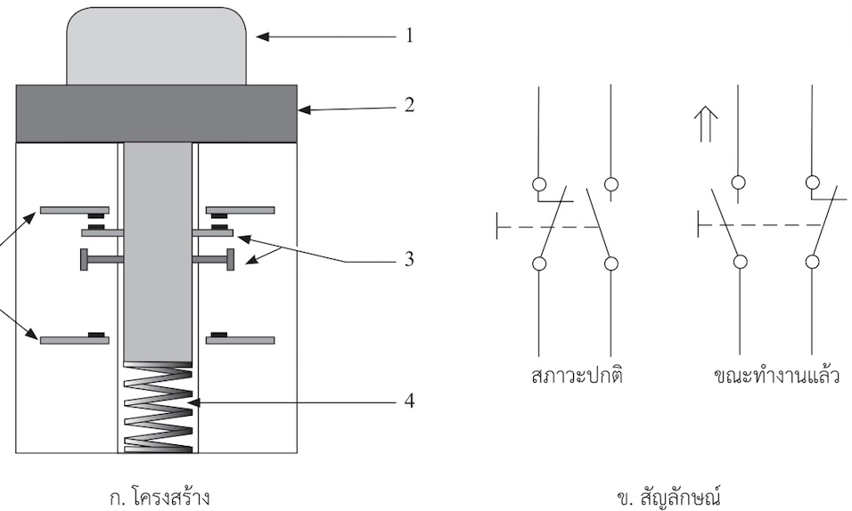
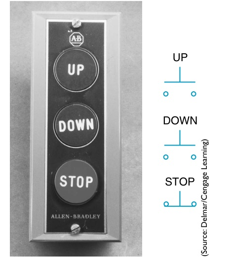
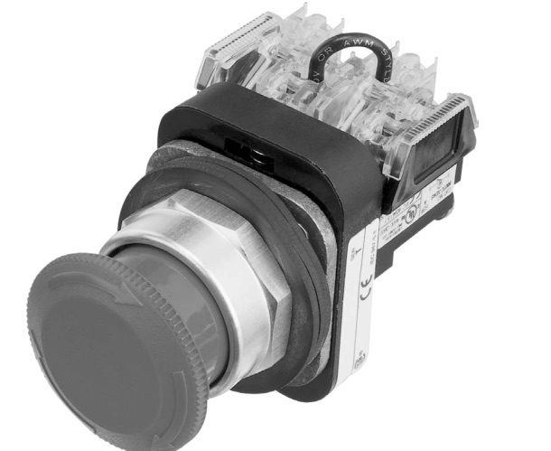
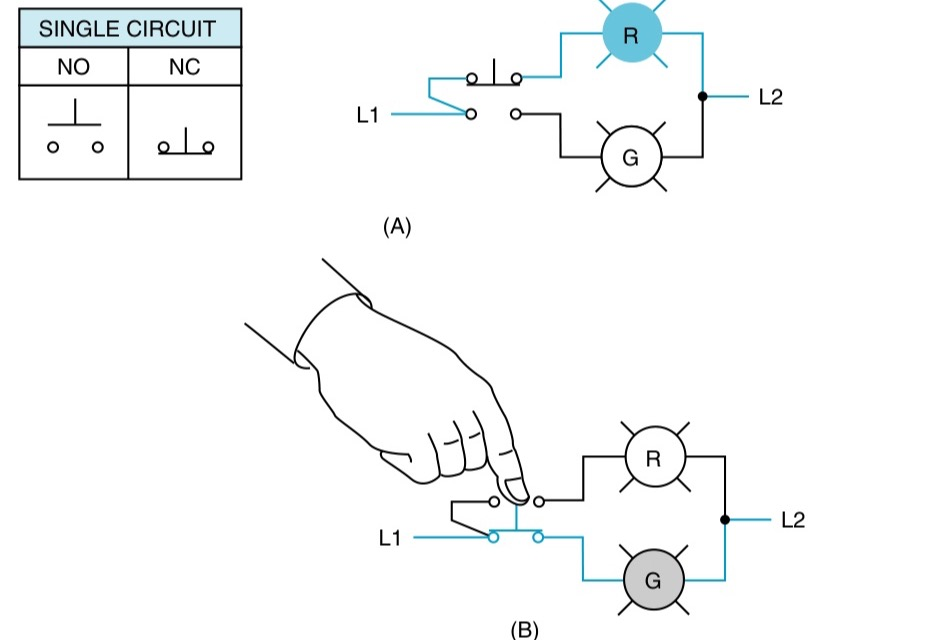

สวิตช์ปุ่มกด (push button) คืออุปกรณ์สั่งงานที่ใช้มากที่สุดในวงจรควบคุม ส่วนใหญ่เป็นแบบชั่วขณะ: กดแล้วหน้าสัมผัสเปลี่ยน ปล่อยแล้วสปริงดันกลับ ข้างใต้ปุ่มคือชุดหน้าสัมผัส (contact block) ที่ซ้อนได้หลายชุด ทั้งปกติเปิดและปกติปิด หน้านี้ผ่าปุ่มกดให้ดูข้างใน กดช้า ๆ แล้วดูว่าหน้าสัมผัสคู่ไหนเปลี่ยนก่อน รู้จักสีของปุ่มตามมาตรฐาน และปุ่มหยุดฉุกเฉินที่ทำงานต่างจากปุ่มอื่น
The push button is the command device used most in control circuits. Most are momentary: press and the contacts change, release and a spring pushes them back. Under the button sit contact blocks, several of them stackable, normally open or normally closed. This page cuts a push button open, lets you press it slowly to see which contact changes first, introduces the standard colours, and the emergency stop, which works differently from the others.
รูป 3.1 ในตำราผ่าปุ่มกดที่มีหน้าสัมผัสสองชุด: ปุ่ม (1) ตัวเรือน (2) หน้าสัมผัสที่เคลื่อนที่ไปกับแกนกด สปริงดันกลับด้านล่าง และหน้าสัมผัสที่อยู่กับที่ (5) ชุดบนเป็นปกติปิด (สะพานแนบหน้าสัมผัสอยู่) ชุดล่างเป็นปกติเปิด ด้านขวาคือสัญลักษณ์ในสภาวะปกติและขณะกด ซึ่งเส้นประเชื่อมหน้าสัมผัสทั้งสองไว้กับตัวสั่งงานเดียวกัน
ส่วนรูปของ EMC9 คือชุดปุ่มกดจริงและปุ่มหัวเห็ดที่มีชุดหน้าสัมผัสติดด้านหลัง
Textbook Fig. 3.1 cuts open a push button with two contact elements: the button (1), the body (2), the moving contacts carried by the plunger, the return spring underneath and the fixed contacts (5). The upper element is normally closed (its bridge rests on the contacts), the lower one normally open. On the right are the symbols at rest and when pressed; the dashed line ties both contacts to one operator.
The EMC9 pictures show a real push-button station and a mushroom-head button with its contact blocks behind it.



ภาพถ่ายจริงด้านล่าง: กล่องปุ่มกดที่มีปุ่มหยุดฉุกเฉิน ปุ่มกดที่ถอดจากหน้าตู้ให้เห็นชุดหน้าสัมผัสด้านหลัง และหลอดสัญญาณแยกชิ้น แตะหมายเลขเพื่อดูว่าชี้ส่วนไหน
Real photographs below: a control box with an emergency stop, a push button taken off a panel to show the contact block behind it, and a pilot light in pieces. Tap a number to see what it points at.
กดค้างที่ภาพปุ่ม (หรือปุ่มในแผงด้านล่าง) แล้วดูสะพานหน้าสัมผัสทั้งสองชุดขยับลง เปิด "แสดงช้า" เพื่อให้เห็นช่วงสีเหลืองในกราฟ ซึ่งหน้าสัมผัสทั้งสองเปิดอยู่พร้อมกัน ภาพกลางคือปุ่มเดียวกันในแบบ IEC ต่อหลอด H1 ผ่าน 11–12 และ H2 ผ่าน 23–24 แล้วลองเปลี่ยนเป็นปุ่มหยุดฉุกเฉิน: กดแล้วค้างจนกว่าจะหมุนปลด
Press and hold the button in the picture (or the one in the panel below) and watch both contact bridges move down. Turn on "Slow motion" to see the yellow band in the diagram, where both contacts are open together. The middle picture is the same button in an IEC drawing, lighting H1 through 11–12 and H2 through 23–24. Then switch to the emergency stop: it stays pressed until you turn it to release.
ปุ่ม S1 มีหน้าสัมผัสสองชุด ชุดแรกปกติปิด ต่อกับหลอดแดง H1 ชุดที่สองปกติเปิด ต่อกับหลอดเขียว H2 (ตามรูป 6-2 ของ EMC9) (ก) ขณะไม่กด หลอดใดติด (ข) ขณะกดค้าง หลอดใดติด (ค) เขียนเลขขั้วของหน้าสัมผัสทั้งสองชุด
Button S1 has two contact elements: the first, normally closed, feeds red lamp H1; the second, normally open, feeds green lamp H2 (as in EMC9 Fig. 6-2). (a) Which lamp is lit when the button is not pressed? (b) Which when it is held down? (c) Write the terminal numbers of both contacts.

สีของหลอดสัญญาณ (ตาราง 4): แดง = ฉุกเฉิน/อันตราย, เหลือง = ผิดปกติ, น้ำเงิน = ต้องทำ, เขียว = ปกติ, ขาว = ทั่วไป
Indicator-light colours (Table 4): red = emergency/hazard, yellow = abnormal, blue = mandatory action, green = normal, white = neutral.